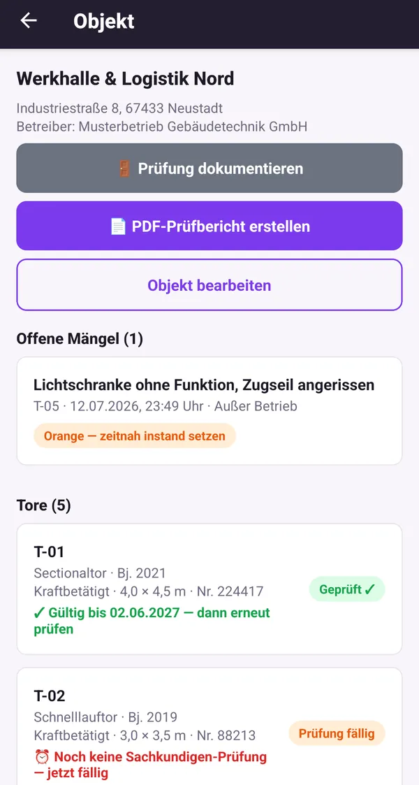
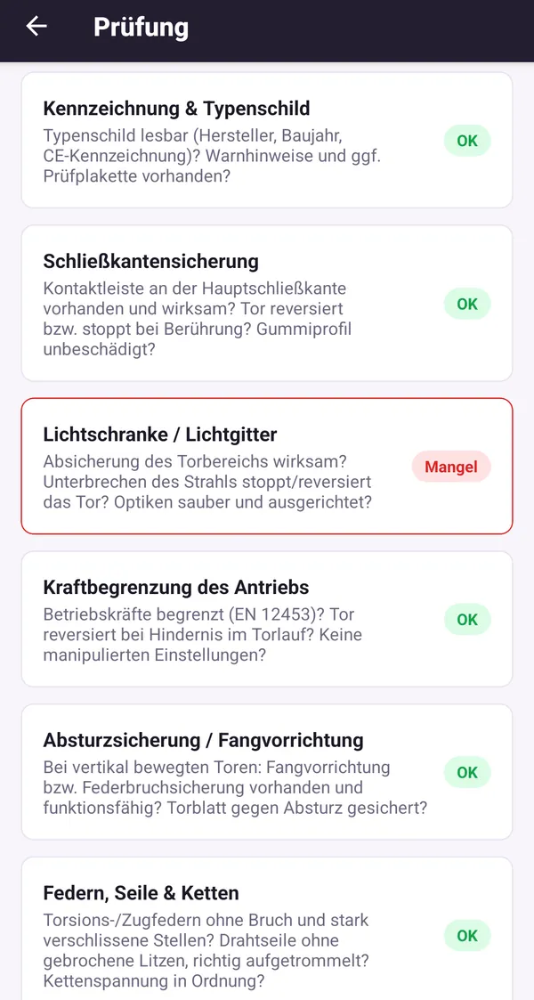
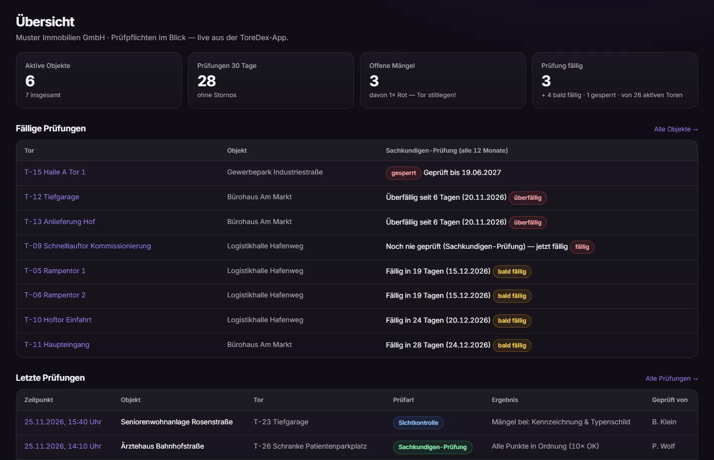
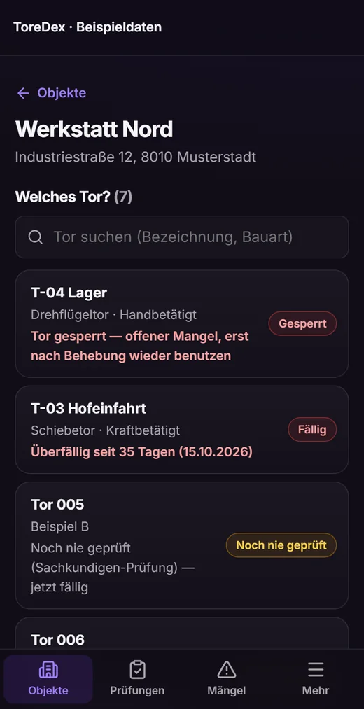
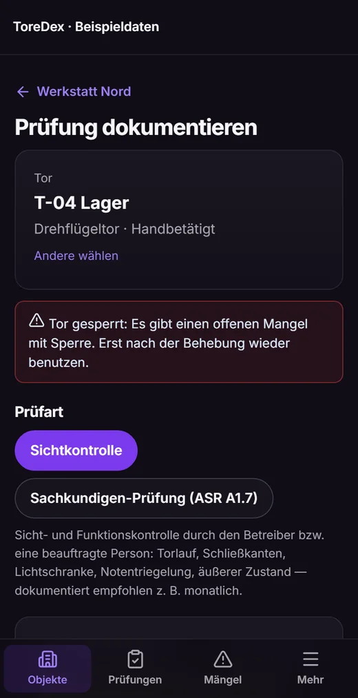
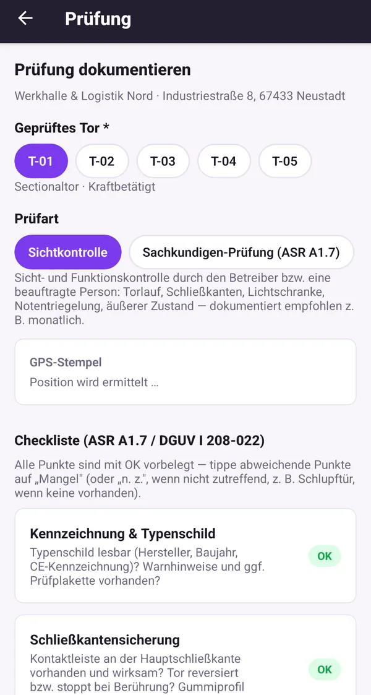

Checkliste fürs Rolltor
Zwölf Punkte nach ASR A1.7, darunter Schließkante, Lichtschranke, Kraftbegrenzung, Fangvorrichtung und Notentriegelung. Jeder Befund bekommt eine Ampelstufe: beobachten, instand setzen oder Tor stilllegen.
Hallentor, Tiefgaragentor oder Schranke: ToreDex sammelt alle kraftbetätigten Tore einer Liegenschaft, führt durch die Prüfung von Rolltoren und Co. und legt jedes Ergebnis im digitalen Prüfbuch ab. Gedacht für Hausverwaltung, Facility Management, Industrie und Tor-Service.
iPhone & iPadApp noch in Arbeit — läuft schon jetzt im Browser


Dashboard im Browser
Was du am Tor prüfst, siehst du im Dexware-Dashboard am Computer — mit demselben Konto, ohne Installation.
Betreiberpflicht
Ein Rolltor ist schwer, ein Sektionaltor hängt an gespannten Federn, ein Schiebetor kann Menschen einklemmen. Deshalb prüft ein Sachkundiger kraftbetätigte Tore vor der ersten Inbetriebnahme, nach wesentlichen Änderungen und danach wiederkehrend. Wie das in der Praxis aussieht, beschreibt die DGUV Information 208-022.
Funktionen
Wer mehrere Liegenschaften betreut, weiß selten aus dem Kopf, welches Tor wann zuletzt dran war. ToreDex ordnet nach Objekt und rechnet die Termine selbst.
Zwölf Punkte nach ASR A1.7, darunter Schließkante, Lichtschranke, Kraftbegrenzung, Fangvorrichtung und Notentriegelung. Jeder Befund bekommt eine Ampelstufe: beobachten, instand setzen oder Tor stilllegen.
Torart, Antrieb, Hersteller, Baujahr und Seriennummer stehen bei jedem Tor. Wann die Jahresprüfung je Tor fällig ist, zeigt ToreDex selbst; an den Monatscheck erinnert dich die App am Monatsersten (Pro). Ein stillgelegtes Tor bleibt im Nachweis.
Das PDF bündelt ein Objekt, für den aktuellen Monat oder die gesamte Historie, samt Rechtsgrundlage je nach Land, ob Deutschland, Österreich oder Schweiz. Gespeicherte Prüfungen sind gesperrt, ein Storno braucht einen Grund.
iPhone & iPad
Die iPhone-App ist noch in Arbeit. Bis dahin läuft ToreDex in Safari, wie eine App auf deinem Home-Bildschirm: Tore prüfen — mit Checkliste, Fotos und Unterschrift — im selben Konto, mit denselben Nachweisen.
Gut zu wissen: Im Funkloch bleiben deine Eingaben auf dem Gerät und werden gesendet, sobald wieder Netz da ist. QR-Scan, Erinnerungen und einige Extras gibt es vorerst nur in der Android-App. Es gelten dieselben Gratis-Grenzen wie in der App.
Jederzeit zum Laufzeitende kündbar · Verkäufer und Zahlungsabwicklung: Paddle (Widerruf & Erstattung). Der Tarif gilt für dein Konto — im Browser und später in der App. Bis dahin gibt es Pro in der Android-App.


 ToreDexauf dem Home-Bildschirm
ToreDexauf dem Home-BildschirmSo funktioniert's
Halle, Tiefgarage oder Wohnanlage, darin jedes Tor mit Torart, Antrieb und Baujahr.
Punkt für Punkt durch die Liste, Mangel einstufen, Befund fotografieren. GPS-Stempel und Uhrzeit setzt ToreDex.
Das Protokoll geht als PDF an Eigentümer, Geschäftsführung, Versicherer oder BG.

Preise
0 €
für immer
9,99 € / Monat
oder 79,99 € im Jahr
24,99 € / Monat
oder 199,99 € im Jahr · entspricht 16,67 € im Monat
Ein Abo pro Betrieb, nicht pro Kopf: Mitarbeiter treten per Team-Code bei und brauchen kein eigenes Abo.
| Stufe | Monat | Jahr |
|---|---|---|
| Pro bis 20 Mitarbeiter | 9,99 € | 79,99 € |
| Team bis 50 Mitarbeiter | 14,99 € | 119,99 € |
| Team XL bis 100 Mitarbeiter | 19,99 € | 159,99 € |
| Unternehmen über 100 Mitarbeiter | Angebot | auf Rechnung |
Stufe jederzeit in der App wechseln, die Restlaufzeit wird verrechnet. Größere Lizenzen mit Angebot, Rechnung und Auftragsverarbeitungsvertrag: support@dexware.app.
Abschluss direkt in der App über Google Play · jederzeit kündbar · Preise inkl. MwSt.
Gratis: 2 Tore, Objekte unbegrenzt — für immer. Pro nur, wenn du mehr brauchst.
Teil von Dexware
ToreDex gehört zu Dexware — schlanke Apps für Prüfung und Dokumentation im Betrieb.
ToreDex ist im Suite-Abo enthalten
Im Suite-AboDexware Suite – ein Abo, alle Prüf-Apps
Eigener TarifWeitere Apps von Dexware – nicht im Suite-Abo